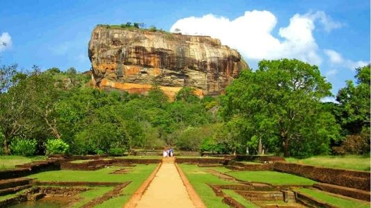
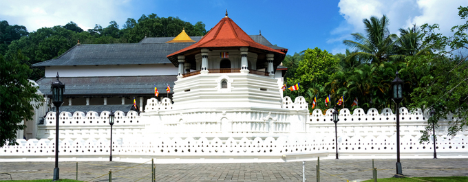
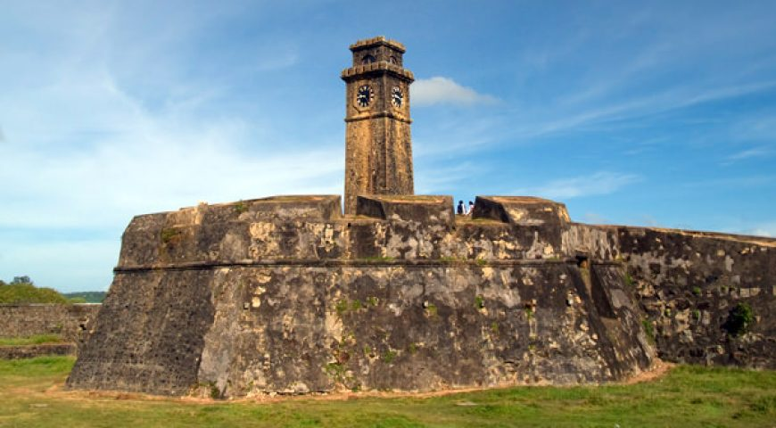

|  | Sigiriya - Historic Rock Fortress in Sri Lanka |
| Popularly known as the Lion Rock, Sigiriya is a rock fortress that is dominated by a massive column of rock towering over 200 metres high nearly touching the sky. The view from the plateau is astonishing and has attracted visitors from worldwide. As history has it, King Kasyapa built his palace on top of this plateau and inscribed the walls with colorful frescoes. This valuable monument is also listed under the UNESCO World Heritage sites and is truly a historic place to visit. | |
|  | Kandy - Home to the Temple of the Tooth |
| The second largest city in Sri Lanka only next to Colombo, Kandy was the last capital of the ancient King's era. Lying amidst the hills in the Kandy plateau, the city boasts with sub-tropical scenes that are refreshing for the senses. Kandy also has enough historic attractions that would make an ideal tourist destination including the famous Temple of the tooth, a significantly old sacred place in Sri Lanka. | |
|  | Galle - A Dutch famous Historic site |
| With the aroma of the scent of the spices and seashore winds, Galle is one of the must visit places in Sri Lanka. Occupied by the Portuguese during the 16th century, Galle has a wonderful collection of Dutch architecture styled buildings and is a place of trade. Galle fort, which occupies a land area of 36 hectares, is one of the prominent historic features of Galle. |